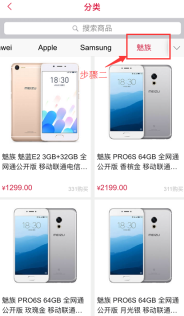

播购购物流程
| 步骤 | 集体操作 |
| 注册 | 填写详细个人信息，同意协议，提交完成注册 |
| 查找商品 | 分类浏览或者直接搜索来查找商品 |
| 放入购物车 | 商品放入购物车后去结算或者继续购物 |
| 提交订单 | 选择配送方式和支付方式后提交订单 |
| 查看订单状态 | 分为准备收货或者上门自提两种状态 |
| 收货后评价 | 收货确认后能评价商品 |
如何购买下单？
下单操作步骤：
1、浏览您要购买的商品，点击“加入购物车”或“立即购买”，商品会自动添加到购物车里；
2、如果您需要更改商品数量，需在商品数量框中输入购买数量；（如下图）
3、选好商品后点击“确定”；（如下图）
4、进入“选择我最喜爱的主播购买”界面，选择主播；（如下图）
5、详细填写收货人信息等信息；（如下图）
6、查看订单详细信息：可进入“个人”→“我的订单”查看。
如何查找想要的商品？
一、通过商品品类查询商品：例如，我需要购买魅族手机MX6移动4G 灰色版本
步骤一：将屏幕移到播购首页【好货】→【手机】点击屏幕
步骤二和步骤三：在手机筛选页面的【品牌】选项中，找到【魅族】LOGO并点击屏幕，然后再选中商品即可
步骤四：进入商品页。

二、通过搜过关键词
例如，需要购买魅族手机MX6，可以在搜索框直接搜索该商品或者该商品关键字。“魅族”“魅族MX6”“MX6”
三、通过商品编号查询
可以直接在搜索栏输入商品编号，精确查找到商品。
我可以取消订单吗？如何取消？如何操作？
（1）货到付款订单，订单处于暂停状态，您可以直接点击我的订单进去，下方会有取消订单按钮，直接点击取消订单即可；如货物已经打包好等待发货，订单已经无法取消，建议您直接拒收商品；
（2）在线支付订单，您可以直接点击订单下方取消订单按钮，然后申请退款即可，如后期货物送去，建议您直接拒收。
注意：
货到付款的订单，如果一个ID帐号在一个月内有过1次以上或一年内有过3次以上，无理由不接收我司配送的商品，我司将在相应的ID帐户里按每单扣除500个播币做为运费；时间计算方法为：成功提交订单后向前推算30天为一个月，成功提交订单后向前推算365天为一年，不以自然月和自然年计算。
刚刚我下了订单，我想查询下我的订单，如何查询？
在播购个人点击左上方【我的订单】即可查询到下单记录。
如图：
订单已经提交成功，可以改送到其他地方吗？
播购发货的订单，在订单打印前，可以修改末级收货地址，打开订单详情页面，点击上方修改按钮即可，如无修改按钮，则说明订单已经无法进行修改。